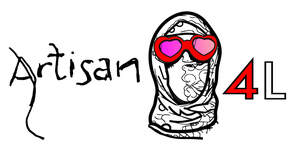
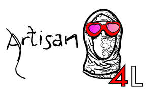

Trade Mark Journal No.2025/037 12 September 2025
UK00004236636 20 July 2025 (41)
Mark 1

Mark 2

- Class 41
- Education; Vocational education; Pre-school education; Education and training; Academies [education]; Education and instruction; Education services; Services of schools [education]; University education services; Academy services (Education -); Education academy services; Academy education services; Education, teaching and training; Vocational education and training services; Training and education services; Education and training services; Education and instruction services; Educational services for providing courses of education; Provision of education courses; Career counseling [education]; Higher education services; Provision of training and education; Provision of education and training; Providing of education; Entertainment, education and instruction services; Education academy services for teaching art history; Computer education training; Education services relating to vocational training; Education information; Information (Education -); Primary education services; Adult education services; Computer education training services; Education and training consultancy; Primary education services relating to literacy; Further education; Education academy services for teaching acting; Legal education services; Technological education services; Online education services; Management of education services; Management education services; Education services related to the arts; Career counselling relating to education and training; Educational services provided by institutes of higher education; Club education services; Education and training in the field of music and entertainment; Adult education services relating to finance; Guidance (Vocational -) [education or training advice]; Vocational guidance [education or training advice]; Education information services; Secondary school educational services; Education, entertainment and sport services; Education services relating to business training; Educational and teaching services; Training or education services in the field of life coaching; Career counselling [training and education advice]; Vocational education for young people; Adult education services relating to commerce; Career advisory services (education or training advice); Adult education services relating to banking; Education services relating to commerce; Educational services provided by institutes of further education; Adult education services relating to management; Education services relating to photography; Entertainment; Theatre entertainment; Television entertainment; Cinema entertainment; Musical entertainment; Interactive entertainment; Music entertainment services; Entertainment services; Television entertainment services; Education, entertainment and sports; Sports entertainment services; Radio entertainment; Musical entertainment services; Live entertainment; Tv entertainment services; Interactive entertainment services; Nightclub services [entertainment]; Entertainment information; Information (Entertainment -); On-line entertainment; Booking of entertainment; Entertainment services in the nature of arranging social entertainment events; Radio entertainment services; Corporate entertainment services; Live entertainment services; Popular entertainment services; Entertainment services in the nature of organizing social entertainment events; Corporate hospitality (entertainment); Cinematographic entertainment services; Audio entertainment services; Entertainment club services; Club entertainment services; Club services [entertainment]; Video entertainment services; Provision of entertainment; Television and radio entertainment services; Radio and television entertainment services; Entertainment in the nature of theater productions; Television and radio entertainment; Radio and television entertainment; Entertainment services in the form of cinema performances; Online entertainment services; Services for the production of entertainment in the form of television; Live entertainment production services; Online interactive entertainment; Provision of live entertainment; Production of live entertainment events; Entertainment agency services; Fan club services (entertainment); Exhibition services for entertainment purposes; Organization of entertainment events; Arranging of entertainment shows; Preparation of entertainment programmes for the cinema; Production of live entertainment features; Conducting of entertainment events; Entertainment services in the form of concert performances; Road shows being entertainment services; Film production for entertainment purposes; Organisation of entertainment services; Entertainment services for producing live shows; Entertainment in the nature of fashion shows; Providing entertainment information; Cultural, educational or entertainment services provided by art galleries; Adult education services relating to intellectual property; Publication of printed matter relating to intellectual property rights; Training consultancy; Educational consultancy; Business training consultancy services; Educational consultancy services; Consultancy services relating to training; Consultancy services in the field of entertainment; Instruction in the field of the visual arts; Arranging of visual entertainment; Artistic direction of performing artists; Audio, video and multimedia production, and photography; Video editing; Video production; Video tape editing; Audio and video production, and photography; Production of animation; Production of shows; Theater production services; Production of stage performances; Animation production services; Production of podcasts; Show production services; Production of training films; Production of stage shows; Production of cinematographic films; Production of audio entertainment; Organization, production and presentation of theatrical performances; Production of live performances; Artistic management of performing artists; Creation [writing] of podcasts; Teaching services for communication skills; Conducting workshops and seminars in art appreciation; Conducting of workshops and seminars in art appreciation; Transfer of business knowledge and know-how [training]; Teaching; Teaching services; Providing of training, teaching and tuition; Educational services for teaching acting; Teaching by correspondence courses; Lease of teaching materials; Training of teachers; Services for arranging teaching programmes; Conducting of instructional, educational and training courses for young people and adults; Life coaching (training); Lease of instructional materials.
Milo Alexsander